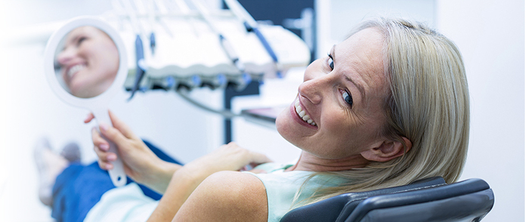
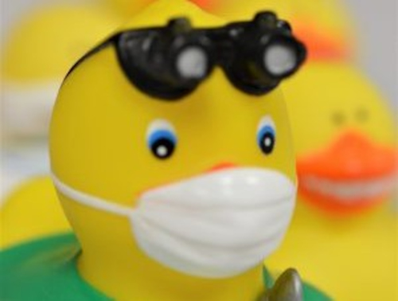

Our first priority is to build a relationship with you based on trust, open communication, and a personalized approach to help you achieve optimal dental health.

As average life expectancies have dramatically increased over time, oral healthcare has become more critical than ever. We know our patients will be with us for many decades, and we take the long view when it comes to dental care, focusing on treatment and solutions that will go the distance. Our patients appreciate that we are a small practice with a personal touch, in a state-of-the-art facility overlooking the beautiful Stroudwater Fore River Sanctuary.
